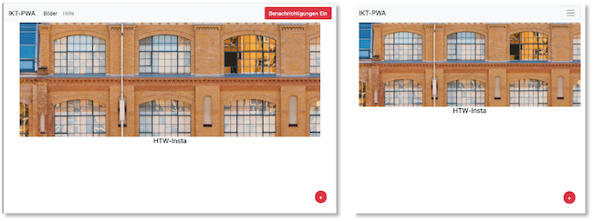
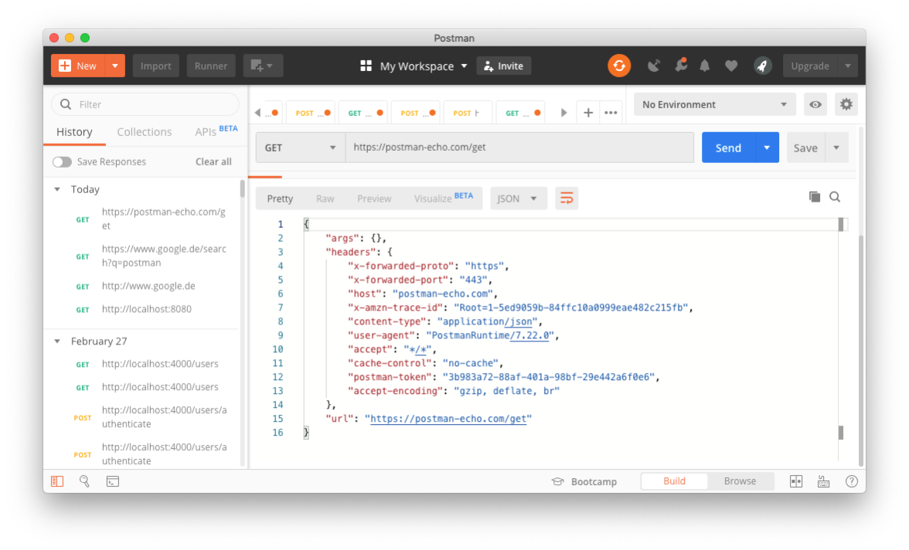

Übungen¶
Übung 1 (Grundgerüst)¶
Übung 1
- In der ersten Übung geht es "nur" darum, das Grundgerüst zu verstehen. Arbeiten Sie dazu diesen Abschnitt durch. Sie werden feststellen, dass sich die meisten Anweisungen (insb. im
HTML-Code) auf Material Design Lite beziehen. - Um zu erkennen, was einen Material Design Lite-Bezug hat (und somit nicht wirklich wichtig ist), ändern Sie das Grundgerüst so, dass Sie nicht Material Design Lite, sondern Bootstrap verwenden. Werfen Sie also Material Design Lite komplett raus und ersetzen es vollständig durch Bootstrap. Löschen Sie die
material.min.jsaus dempublic/js-Ordner. - Starten Sie am besten damit, diese drei Zeilen aus den beiden
index.html-Dateien zu löschen:<link href="https://fonts.googleapis.com/css?family=Roboto:400,700" rel="stylesheet"> <link rel="stylesheet" href="https://fonts.googleapis.com/icon?family=Material+Icons"> <link rel="stylesheet" href="https://code.getmdl.io/1.3.0/material.blue_grey-red.min.css"> - Fügen Sie stattdessen den CSS-Link und das JS-Bundle aus https://getbootstrap.com/docs/4.6/getting-started/introduction/ ein.
- Sie können ja versuchen, dass es möglichst ähnlich aussieht: 
Übung 2 (Web App Manifest)¶
Übung 2
- Erweitern Sie Ihre Anwendung (oder das Grundgerüst) um ein Web App Manifest. Verwenden Sie zur Erstellung des Manifestes am besten den Web-App-Manifest-Generator.
- Wählen Sie ein eigenes Icon. Beachten Sie, dass das Original-Icon die Maße 512x512 Pixel aufweisen muss. Der Web-App-Manifest-Generator fügt das Original-Icon nicht dem Manifest hinzu. Lighthouse beschwert sich darüber, dass dem Manifest ein 512x512-Icon fehlt. Fügen Sie dieses am besten noch händisch hinzu.
- Die Anwendung soll in dem Moment installiert werden, wenn die Nutzerin das erste Mal auf den
+-Button klickt. Das heißt, es wird dasbeforeinstallprompt-Ereignis ausgelöst und die Behandlung dieses Ereignisses sorgt dafür, dass Sie die Anwendung genau dann installieren, wenn Sie das erste Mal den+-Button klicken:
- Hinweise und Hilfestellungen finden Sie z.B. hier oder im Skript (enthält weitere Links) oder im Video zum Manifest.
Übung 3 (Promises und Fetch API)¶
Übung 3
- Laden Sie hier die Anwendung für Übung 3 herunter. Es handelt sich um eine zip-Datei. Entpacken Sie diese, öffnen Sie sie in Ihrer IDE und folgen Sie der README.MD.
- In der Übung üben wir Promises und die Fetch API. Öffnen Sie die Datei
public/src/js/app.js. Die Übung besteht aus 3 Teilen: - Teil 1: führen Sie ein
fetch()als GET nachhttps://httpbin.org/ipaus und geben Sie die zurückgegebene IP in dasoutput-Element (<p id="output"></p>) in derpublic/index.htmlaus. - Teil 2: führen Sie ein
fetch()als PUT nachhttps://httpbin.org/putaus. Das übergebene JSON wird von dort einfach zurückgespiegelt. Geben Sie einen oder mehrere Werte aus diesem JSON in dasoutput-Element (<p id="output"></p>) in derpublic/index.htmlaus. - Teil 3: bauen Sie einen Fehler in die Anfrage (z.B. falsche Url) und behandeln Sie diesen Fehler mit einer Ausgabe auf die Konsole.
- Hinweise und Hilfestellungen finden Sie im Skript unter Promises und die Fetch-API.
Übung 4 (Entwicklungs-Infrastruktur einrichten)¶
Übung 4
Wir richten unsere Entwicklungs-Infrastruktur, die wir benötigen, um eine Frontend-Backend-Datenbank-App zu erstellen.
-
Lokalen Webserver einrichten:
-
Es sollte etwas Sinnvolles erscheinen, wenn Sie
http://localhost/in den Browser eingeben (also entweder wird eine eigene html- oder php-Datei geöffnet, oder es steht soetwas wieIt works). Wenn das nicht der Fall ist, dann benötigen Sie erst noch einen Webserver. Auf dem Mac und unter Linux existiert aber immer bereits einer, nur unter Windows muss dann z.B. XAMPP installiert werden. -
Sie müssen wissen, aus welchem Ordner die Ressourcen geladen werden, wenn Sie
http://localhost/in den Browser eingeben. Diesen Ordner nennen wirDocumentRoot. Der Standard-DocumentRoot-Ordner- auf dem Mac ist
/Library/WebServer/Documents, - unter Linux/www/html/, - unter Windows (XAMPP)/xampp/htdocs.
Vor den angegebenen Pfaden kann in Linux und Windows noch etwas stehen, das hängt von der Konfiguration ab und wo Sie Ihr XAMPP unter Windows installiert haben. Wichtig ist, dass Sie genügend Schreibrechte auf den DocumentRoot-Ordner haben! Das ist typischerweise beim Mac unter
/Library/WebServer/Documentsnicht der Fall. Passen Sie auch auf, dass unter Windows Ihrxampp-Ordner nicht bereits zu tief in der Ordnerstruktur steckt. Gehen Sie entsprechende Anleitungen durch, um Ihr DocumentRoot zu ändern. Mein DocumentRoot ist z.B. unter/Users/jornfreiheit/Sites. Hier einige Anleitungen: Windows, Windows, Windows, Mac. - auf dem Mac ist
-
Erstellen Sie zum Testen in Ihrem DocumentRoot-Ordner eine
index.html-Datei mit folgendem Inhalt:<html><body><h1>DocumentRoot korrekt eingerichtet!</h1></body></html>und rufen Sie dann im Browserhttp://localhost/auf. Es sollte im Browser DocumentRoot korrekt eingerichtet! erscheinen. -
Für
phpMyAdminbenötigen Sie auch nochphp. Erstellen Sie in Ihrem DocumentRoot-Ordner eine Dateiindex.phpmit folgendem Inhalt:<?php phpinfo(); ?>und rufen Sie dann im Browserhttp://localhost/index.phpauf. Es sollte etwas in dieser Art erscheinen:
Wenn
localhostfunktioniert, dann gibt es mit PHP eigentlich nur (neuerdings - erst seit Big Sur) unter dem Mac Probleme. Nutzen Sie dann eine der folgenden Anleitungen: 1, 2, 3.
-
-
Datenbank einrichten:
-
Sie müssen nicht unbedingt ein lokales Datenbanksystem installieren, sondern können auch den Studi-Server
https://studi.f4.htw-berlin.deverwenden. -
Wenn Sie sich lokal ein Datenbanksystem installieren, was man ruhig einmal gemacht haben sollte, dann ist es egal, ob Sie
MariaDB(kommt mit XAMPP) oderMySQLinstallieren. Beide Systeme sind in der Anwendung völlig gleich. Sie können auchPostgresverwenden, das habe ich aber nicht lokal und es kann sein, dass meine Anleitungen dann angepasst werden müssten (vielleicht aber auch nicht).MariaDBwird mit XAMPP ausgeliefert - betrifft also hauptsächlich die Windows-Nutzerinnen XAMPP.- Für Mac ist die Installation von XAMPP nicht notwendig (und auch nicht empfehlenswert, da Sie ansonsten nur mehrere Webserver haben). Für die Installation von MySQL unter Mac gibt es viele Videos, sollte aber auch so von hier aus gut funktionieren (eine weitere Anleitung z.B. hier).
- phpmyadmin ist eine Weboberfläche für die Verwaltung einer
MySQl-Datenbank. Es ist sehr zu empfehlen, dass Sie sich phpmyadmin installieren, wenn Sie sichMySQLinstalliert haben. Installationanleitungen gibt es viele, z.B. für Mac, Linux und Windows. Im Prinzip müssen Sie aber dasphpmyadmin-Paket nur entpacken und in Ihren DocumentRoot-Ordner bewegen, dann können Siephpmyadminüberhttp://localhost/phpmyadminaufrufen.
-
-
Postmaninstallieren:-
Postman ist eine Anwendung, um Schnittstellen (Application Programming Interface - API), die das Backend bereitstellt, zu entwickeln und zu testen. Sie finden Postman unter postman.com. Wir beschränken uns auf den Postman API Client.
-
Laden Sie das Tool herunter und installieren es. Rufen Sie Postman auf und geben in das Eingabefeld
https://postman-echo.com/getein. Lassen Sie die Auswahl links daneben aufGETund klicken auf denSend-Button. Es erscheint folgendes Bild:
-
Neben der
GET-Anfrage sind folgende weitere Anfragen HTTP-Anfragen möglich:POST- sendet Daten zur Verarbeitung an den Webserver -PUT- lädt existierende Daten (eine Datei) auf den Server -PATCH- ändert Daten (eine Datei), ohne - wie beiPUT- diese vollständig zu ersetzen -DELETE- löscht die angegebenen Daten auf dem Server
-
-
Node.jsinstallieren:- Node.js ist eine JavaScript-Laufzeitumgebung für einen Server. Node.js reagiert auf Ereignisse und antwortet asynchron. Das bedeutet, dass die Ausführung einer Ereignisbearbeitung nicht zum Blockieren der Laufzeitumgebung führt, sondern nebenläufig weitere Ereignisse eintreffen können, die ebenfalls asynchron behandelt werden.
- Laden Sie sich hier Node.js herunter und installieren es.
- Node.js ist eine JavaScript-Laufzeitumgebung für einen Server. Node.js reagiert auf Ereignisse und antwortet asynchron. Das bedeutet, dass die Ausführung einer Ereignisbearbeitung nicht zum Blockieren der Laufzeitumgebung führt, sondern nebenläufig weitere Ereignisse eintreffen können, die ebenfalls asynchron behandelt werden.
-
Paketmanager
npm:-
- Sie können testen, ob die Installation von
nodeundnpmerfolgreich war, indem Sie im Terminal (Windows-Nutzerinnen bitte als Terminal die GitBash verwenden) eingeben:
Mit der Installation von
node.js, installieren Sie auch den Paketmanagernpm(siehe npmjs).node --versionSollte etwas, wie
v14.15.0ausgeben undnpm --versionsollte etwas, wie
7.13.0ausgeben. - Sie können testen, ob die Installation von
-
-
Angular-Command-Line-Interface (CLI)installieren:-
- Um einfacher mit
Angularzu entwickeln zu können, benötigen wir das Angular-Command-Line-Interface (CLI). Dieses installieren wir mithilfe des Paketmanagersnpm. Geben Sie dazu ins Terminal
Angular ist ein modernes JavaScript-Framework zur Entwicklung moderner Weboberflächen. Es gehört neben React.js und Vue.js zu den meisteverwendeten Frameworks für die Entwicklung sogenannter Single-Page-Applikationen.
npm install -g @angular/cliein. Sie können prüfen, ob die Installation erfolgreich war, indem Sie in das Terminal
ng --versioneingeben. Es sollte etwas in der Art ausgeben:
_ _ ____ _ ___ / \ _ __ __ _ _ _| | __ _ _ __ / ___| | |_ _| / △ \ | '_ \ / _` | | | | |/ _` | '__| | | | | | | / ___ \| | | | (_| | |_| | | (_| | | | |___| |___ | | /_/ \_\_| |_|\__, |\__,_|_|\__,_|_| \____|_____|___| |___/ Angular CLI: 11.0.1 Node: 14.15.0 OS: darwin x64 Angular: ... Ivy Workspace: Package Version ------------------------------------------------------ @angular-devkit/architect 0.1100.1 (cli-only) @angular-devkit/core 11.0.1 (cli-only) @angular-devkit/schematics 11.0.1 (cli-only) @schematics/angular 11.0.1 (cli-only) @schematics/update 0.1100.1 (cli-only) - Um einfacher mit
-
-
Ich hoffe, es klappt alles! Eventuelle Probleme können wir in der Vorlesung am 26.5. und/oder in der Übung am 27.5. besprechen.
Übung 5 (Backend)¶
Übung 5
-
Ergänzen Sie das in [Backend] erstellte Backend um einen REST-Endpunkt
Bei Aufruf dieses Endpunktes soll dem Request-Body ein JSON in der FormGET http://localhost:3000/posts/titlemitgesendet werden. Der Wert von{ "title": "first post" }titlein diesem JSON wird verwendet, um den Datensatz/die Datensätze auszulesen, die dentitlehaben (also hier der Datensatz mit demtitle"first post").
eine mögliche Lösung für Übung 5
-
In der
server.jsfügen wir einen weiteren Endpunkt hinzu und rufen für diesen request eine FunktionreadOneByTitleimPostControllerauf:1 2 3 4 5 6 7 8 9 10 11 12 13 14 15 16 17 18 19 20 21 22 23 24 25 26 27 28 29 30 31
import express from 'express'; import cors from 'cors'; import { PostController } from './posts.controller.js'; const app = express(); const PORT = 3000; app.use(cors()); app.use(express.urlencoded({ limit: '20mb', extended: true })); app.use(express.json({ limit: '20mb' })); app.get('/', (request, response) => { response.send('HELLO FIW!'); }); // Endpunkte definieren app.post("/posts", PostController.create); // C app.get("/posts/title", PostController.readOneByTitle); // R (one) app.get("/posts", PostController.readAll); // R (all) app.get("/posts/:postId", PostController.readOne); // R (one) app.put("/posts/:postId", PostController.update); // U app.delete("/posts/:postId", PostController.delete); // D app.listen(PORT, (error) => { if (error) { console.log(error); } else { console.log(`Server started and listening on port ${PORT} ...`); } });Achten Sie dabei darauf, dass Sie den neuen Endpunkt vor den Endpunkt
get("/posts"positionieren. -
In der
posts.controller.jsdefinieren wir diereadOneByTitle()-Funktion. Da wir dentitlein einem JSON imbodydes Requests übergeben, lesen wir denbodydes Requests aus und darin die Eigenschafttitle. Wir speichern uns diesen Wert in einer Variable (title) und übergeben ihn dem Aufruf einerfindTitle()-Funktion aus demPostService:1 2 3 4 5 6 7 8 9 10 11 12
readOneByTitle: (req, res) => { console.log(req.body); const title = req.body.title; console.log('title:', title); PostService.findByTitle(title, (err, result) => { if (err) res.status(500).send({ message: err.message || "Some error occurred while getting one post", }); else res.json(result); }); },Die Konsolenausgaben können natürlich entfallen.
-
In dem
PostService(db.sqlqueries.js) wird die FunktionfindByTitle()implementiert, indem die passende DB-Anfrage gestellt wird:1 2 3 4 5 6 7 8 9 10
findByTitle: async(title, result) => { sql.query( `SELECT * FROM posts WHERE title = ?`, [title], (err, res) => { if (err) result(err, null); else if (res.length) result(null, res); else result({ message: "post not found" }, null); } ); },Das war's schon. Ich hoffe, es hat bei Ihnen geklappt!
Übung 6 (Frontend)¶
Übung 6
- Im Abschnitt Frontend haben wir uns ein Frontend erstellt, um mithilfe eines Formulars Daten (insb. ein Bild) einzugeben und diese in einer Datenbank abzuspeichern.
- Erweiteren Sie dieses Frontend um eine Komponente, die alle in der Datenbank gespeicherten Daten visualisiert, insb. die in der Datenbank gespeicherten Bilder. Erstellen Sie sich dazu eine neue Komponente.
- Sie müssen dazu auch den
PostServiceum die Anbindung an den EndpunktGET /postserweitern.
Tipps: Es kann sein, dass Sie das vom Backend zurückgegebene JSON verändern müssen. Derzeit wird für image ein ArrayBuffer zurückgegeben, mit "type": "Buffer" und einem Array für "data". Wenn Sie dieses Array Frontend-seitig verarbeiten können und als ein Bild angezeigt bekommen, dann würde mich sehr interessieren, wie Sie das gemacht haben. Ich habe das Backend angepasst und gebe den Base64-Code für image zurück. Im Frontend muss man diesen base64-Code dann nur noch hinter den String 'data:image/jpg;base64,' hängen und erhält so den Wert für das src-Attribut eines Images. Schauen Sie sich dazu auch den Typ SafeResourceUrl und die Funktion bypassSecurityTrustResourceUrl(src) von DomSanitizer an.
eine mögliche Lösung für Übung 6
-
In dem Backend führen Sie zunächst folgende Änderung durch: Im
post.controller.jsändern wir diereadAll()-Methode wie folgt:1 2 3 4 5 6 7 8 9 10 11 12 13 14 15 16 17 18 19 20 21 22 23 24 25 26 27 28 29
import { PostService } from './db.sqlqueries.js'; export const PostController = { readAll: (req, res) => { PostService.getAll((err, result) => { if (err) res.status(500).send({ message: err.message || "Some error occurred while getting all posts", }); else { console.log(result); let arr = []; result.forEach( post => { let buff = new Buffer(post.image, 'base64'); let text = buff.toString('ascii'); //console.log(text); post.image = text; arr.push(post); }); res.json(arr); } }); }, // hier noch die anderen Funktionen }Davor hatten wir
return res.json(result). Jetzt geben wir ebenfalls ein Array von unserenPostszurück, allerdings istpost.imagedarin nicht mehr einArrayBuffer, sondern einStringmit dembase64-Code. -
Starten Sie das Backend (
npm run watch)! -
Wechseln Sie im Terminal in den
frontend-Ordner (der Angular-Projekt-Ordner Ihres Frontends) und geben Sie darinng generate component readein. Damit wird die
ReadComponenterzeugt. In Ihrem Projektordner wird unter/src/appein ordnerreaderzeugt, der 4 Dateienread.component.*enthält. -
Öffnen Sie in Ihrer IDE die
app-routing.module.tsund fügen Sie dort die neue Route/readhinzu, unter der dieReadComponentaufgerufen wird:1 2 3 4 5 6 7 8 9 10 11 12 13 14 15
import { NgModule } from '@angular/core'; import { RouterModule, Routes } from '@angular/router'; import { CreateComponent } from './create/create.component'; import { ReadComponent } from "./read/read.component"; const routes: Routes = [ { path: 'create', component: CreateComponent}, { path: 'read', component: ReadComponent} ]; @NgModule({ imports: [RouterModule.forRoot(routes)], exports: [RouterModule] }) export class AppRoutingModule { }Nun erscheint die
ReadComponentunter der Routehttp://localhost:4200/read. -
Öffnen Sie die
nav.component.htmlund fügen Sie dort den neuen MenüpunktReadhinzu. Unter diesem Menüpunkt wird mithilfe vonrouterLinkdie Routehttp://localhost:4200/readaufgerufen.1 2 3 4 5 6 7 8 9 10 11 12 13 14 15 16 17 18 19 20 21 22
<mat-sidenav-container class="sidenav-container"> <mat-sidenav #drawer class="sidenav" fixedInViewport [attr.role]="(isHandset$ | async) ? 'dialog' : 'navigation'" [mode]="(isHandset$ | async) ? 'over' : 'side'" [opened]="(isHandset$ | async) === false"> <mat-toolbar>Menu</mat-toolbar> <mat-nav-list> <a mat-list-item routerLink="/create" routerLinkActivate="active">Create</a> <a mat-list-item routerLink="/read" routerLinkActivate="active">Read</a> <a mat-list-item href="#">Link 3</a> </mat-nav-list> </mat-sidenav> <mat-sidenav-content> <mat-toolbar color="primary"> <button type="button" aria-label="Toggle sidenav" mat-icon-button (click)="drawer.toggle()" *ngIf="isHandset$ | async"> <mat-icon aria-label="Side nav toggle icon">menu</mat-icon> </button> <span>PWA Frontend</span> </mat-toolbar> <!-- Add Content Here --> <h1>This is app</h1> <router-outlet></router-outlet> </mat-sidenav-content> </mat-sidenav-container> -
Öffnen Sie die Datei
backend.service.ts. Diesem Service wird nun eine weitere Funktion hinzugefügt, nämlichreadAll. Diese Funktion greift, wie bereits die FunktionaddPost()auf das Backend zu, nur dass diereadAll()-Funktion eineGET-Anfrage anhttp://localhost:4200/postsstellt. Die Rückgabe ist ebenfalls einPromise, dieses Mal aber typisiert mitPost[], da das Backend allePostsin einem (JSON-)Array zurücksendet.1 2 3 4 5 6 7 8 9 10 11 12 13 14 15 16 17 18 19 20 21 22 23 24 25 26 27 28 29 30 31 32 33 34 35 36 37 38 39 40 41 42 43
import { HttpClient, HttpHeaders } from '@angular/common/http'; import { Injectable } from '@angular/core'; export interface Post { id: number; title: string; location: string; image: string; } @Injectable({ providedIn: 'root' }) export class BackendService { apiURL = 'http://localhost:3000/posts'; constructor(private http: HttpClient) { } // POST http://localhost:4200/posts public addPost(post: Post): Promise<Post> { return this.http .post<Post>(`${this.apiURL}`, post, { headers: new HttpHeaders({ 'Content-Type': 'application/json', 'Accept-Type': 'application/json' }), }) .toPromise(); } // GET http://localhost:4200/posts public readAll(): Promise<Post[]> { return this.http .get<Post[]>(`${this.apiURL}`, { headers: new HttpHeaders({ 'Content-Type': 'application/json', 'Accept-Type': 'application/json' }), }) .toPromise(); } } -
In der
read.component.tskönnen wir nun diese Funktion desBackendServiceeinmal ausprobieren. Wir binden dazu (wie bereits bei derCreateComponent) denBackendServicemittels dependency injection im Konstruktor ein, rufen diereadAll-Funktion auf und geben das Ergebnis auf die Konsole aus.1 2 3 4 5 6 7 8 9 10 11 12 13 14 15 16 17 18 19 20 21 22 23 24 25
import { Component, OnInit } from '@angular/core'; import { BackendService, Post } from "../backend.service"; @Component({ selector: 'app-read', templateUrl: './read.component.html', styleUrls: ['./read.component.css'] }) export class ReadComponent implements OnInit { allPosts!: Post[]; constructor(private bs: BackendService) { } ngOnInit(): void { this.bs.readAll() .then( posts => { this.allPosts = posts; console.log(posts); }) .catch( err => { console.log(err); }) } }Außerdem speichern wir alle
postsin einer ObjektvariablenallPosts, die vom TypPost[]ist. Wenn wir nun im MenüpunktReadauswählen, erscheint in den DeveloperTools in der Konsole die Ausgabe des Arrays aller Posts aus der Datenbank. -
In der
read.component.htmlkönnen wir uns nun überlegen, wie wir die einzelnenpostsdarstellen wollen. Hier ist ein Beispiel für die Verwendung einerCardaus Angular Material Design:1 2 3 4 5 6 7 8 9 10 11 12 13 14 15
<div class="container" novalidate> <div *ngFor="let post of allPosts"> <mat-card class="polaroid"> <mat-card-header> <mat-card-title>{{post.title}}</mat-card-title> </mat-card-header> <img mat-card-image [src]=imageSrc(post.image) alt="Foto"> <mat-card-content> <p> {{post.location}} </p> </mat-card-content> </mat-card> </div> </div>Für jeden Eintrag
postaus demallPosts-Array wird eineCarderstellt. Die wird mithilfe der Strukturdirektive*ngForerzeugt (siehe z.B. hier). Es erscheinen jetzt noch zwei Fehler:
1. die FunktionimageSrc()ist noch nicht bekannt und
2. dasMatCardModulewurde noch nicht in unser Projekt importiert.
Letzteres machen wir zuerst: -
Öffnen Sie
app.module.tsund importieren Sie dasMatCardModule:1 2 3 4 5 6 7 8 9 10 11 12 13 14 15 16 17 18 19 20 21 22 23 24 25 26 27 28 29 30 31 32 33 34 35 36 37 38 39 40 41 42 43 44 45 46 47 48 49
import { NgModule } from '@angular/core'; import { BrowserModule } from '@angular/platform-browser'; import { AppRoutingModule } from './app-routing.module'; import { AppComponent } from './app.component'; import { BrowserAnimationsModule } from '@angular/platform-browser/animations'; import { NavComponent } from './nav/nav.component'; import { LayoutModule } from '@angular/cdk/layout'; import { MatToolbarModule } from '@angular/material/toolbar'; import { MatButtonModule } from '@angular/material/button'; import { MatSidenavModule } from '@angular/material/sidenav'; import { MatIconModule } from '@angular/material/icon'; import { MatListModule } from '@angular/material/list'; import { CreateComponent } from './create/create.component'; import { FormsModule, ReactiveFormsModule } from '@angular/forms'; import { MatFormFieldModule } from '@angular/material/form-field'; import { MatInputModule } from '@angular/material/input'; import { HttpClientModule } from '@angular/common/http'; import { ReadComponent } from './read/read.component'; import { MatCardModule } from "@angular/material/card"; @NgModule({ declarations: [ AppComponent, NavComponent, CreateComponent, ReadComponent ], imports: [ BrowserModule, AppRoutingModule, BrowserAnimationsModule, LayoutModule, MatToolbarModule, MatButtonModule, MatSidenavModule, MatIconModule, MatListModule, MatFormFieldModule, MatInputModule, MatCardModule, FormsModule, ReactiveFormsModule, HttpClientModule ], providers: [], bootstrap: [AppComponent] }) export class AppModule { } -
In der
read.component.tsfügen wir nun dieimageSource()-Funktion hinzu. Diese ist im Prinzip von hier und hier.1 2 3 4 5 6 7 8 9 10 11 12 13 14 15 16 17 18 19 20 21 22 23 24 25 26 27 28 29 30 31
import { Component, OnInit } from '@angular/core'; import { BackendService, Post } from "../backend.service"; import { DomSanitizer, SafeResourceUrl} from "@angular/platform-browser"; @Component({ selector: 'app-read', templateUrl: './read.component.html', styleUrls: ['./read.component.css'] }) export class ReadComponent implements OnInit { allPosts!: Post[]; constructor( private bs: BackendService, private sanitizer: DomSanitizer) { } ngOnInit(): void { this.bs.readAll() .then( posts => { this.allPosts = posts; }) .catch( err => { console.log(err); }) } imageSrc(base64code: string): SafeResourceUrl { const src = 'data:image/png;base64,'+base64code; return this.sanitizer.bypassSecurityTrustResourceUrl(src); } } -
Jetzt werden die
Cardvollständig angezeigt. Wenn Sie möchten, können Sie ja das Layout noch etwas in derread.component.cssanpassen:1 2 3 4 5 6
.polaroid { width: 250px; box-shadow: 0 4px 8px 0 rgba(0, 0, 0, 0.2), 0 6px 20px 0 rgba(0, 0, 0, 0.19); text-align: center; margin: 20px; }Ich hoffe, es klappt alles. Viel Spaß!
Übung 7 (IndexedDB)¶
Übung 7
- Im Abschnitt IndexedDB haben wir uns mit der Verwendung der In-Browser-datenbank IndexedDB vertraut gemacht.
- In dem dortigen letzten Abschnitt Löschen einzelner EInträge haben wir in der
db.jseine FunktiondeleteOneData(st, id)geschrieben, die einen einzelnen Datensatz aus der IndexedDB mit der übergebenenidlöscht. - Implementieren Sie in der
db.jseine FunktiondeleteByTitle(st, title), die den Datensatz (oder die Datensätze) löscht, der (oder die) in demtitle-Attribut den der Methode alstitleübergebenen String enthält. Z.B. soll aus dem Datensatz{id: 1, title: "first post", location: "Berlin", image: "/9j/4AA...UgP/9k="} {id: 2, title: "second post", location: "Wilhelminenhof", image: "/9j/4AA...VY/9k="} {id: 5, title: "fourth post", location: "Gebaeude C", image: "/9j/4AA...KOX/9k="} {id: 10, title: "HTW aus der Luft", location: "Campus WH von oben", image: "/9j/4AA...9z//2Q=="} {id: 11, title: "Wilhelminenhofstraße", location: "Campus WH Eingang", image: "/9j/4AA...U9D/9k="}- bei Aufruf von
deleteByTitle('posts', 'second')der zweite Datensatz mit derid: 2gelöscht werden, - bei Aufruf von
deleteByTitle('posts', 'post')sollen die ersten drei Datensätze (mitid:1,id:2undid:5) gelöscht werden.
- bei Aufruf von
Tipps: Mit der Methode getAllKeys() ermitteln Sie z.B. alle Schlüssel (id) der Datensätze und mit der Methode get(key) erhalten Sie den zum Schlüssel zugehörigen Wert.
eine mögliche Lösung für Übung 7
-
Die Idee ist, dass wir die Datensätze suchen, deren Titel das gesuchte Wort enthält und den
keyvon diesen Datensätzen verwenden, um diedeleteOneData(store, id)aufzurufen. In derdb.jsfügen wir also die neue FunktiondeleteByTitle(store, title)hinzu, wobeititledas Wort enthält, nachdem wir imtitleder Datensätze suchen:1 2 3 4 5 6 7 8 9 10 11 12 13 14 15 16 17 18 19 20 21 22 23
function deleteByTitle(st, title) { return db .then( dbPosts => { let tx = dbPosts.transaction(st, 'readonly'); let store = tx.objectStore(st); let myIndex = store.index('id'); myIndex.getAllKeys() .then( allKeys => { for(let key of allKeys) { myIndex.get(key) .then( value => { console.log('delete title', value.title); if(value.title.includes(title)) { console.log('treffer ', value.title); console.log(' id ', value.id); console.log(' key', key); deleteOneData(st, key); } } ) } }) }) }- In Zeile
7rufen wir die FunktiongetAllKeys()auf. Diese Funktion gibt ein Promise zurück. In diesem Promise können wir nun durch dieses Array aller Schlüssel durchlaufen.- In Zeile
10lassen wir uns den Wert für den jeweiligen Schlüssel zurückgeben (in einer Promise). In diesem Wert greifen wir auf die Eigenschafttitlezu. - In Zeile
14überprüfen wir, ob das übergebene Wort in dem Titel enthalten ist. Wenn ja, dann löschen wir diesen Datensatz mithilfe vondeleteOneData(st, key), wobei wir denkeyals dieidübergeben, die diese Funktion erwartet.
- In Zeile
- In Zeile
-
Ausprobieren könnte man die neue Funktion in dem Service Worker nach dem Schreiben aller Daten in die IndexedDB (ich schicke mal den kompletten Stand der
sw.jsmit, weil das in der Übung gewünscht wurde):1 2 3 4 5 6 7 8 9 10 11 12 13 14 15 16 17 18 19 20 21 22 23 24 25 26 27 28 29 30 31 32 33 34 35 36 37 38 39 40 41 42 43 44 45 46 47 48 49 50 51 52 53 54 55 56 57 58 59 60 61 62 63 64 65 66 67 68 69 70 71 72 73 74 75 76 77 78 79 80 81 82 83 84 85 86 87 88 89 90 91 92 93 94 95 96 97 98 99 100 101 102 103 104 105 106 107 108 109 110 111 112 113 114 115 116 117 118 119 120 121 122 123 124 125 126 127 128 129 130 131 132 133 134 135 136 137 138
importScripts('/src/js/idb.js'); importScripts('/src/js/db.js'); const VERSION = '10'; const CURRENT_STATIC_CACHE = 'static-v' + VERSION; const CURRENT_DYNAMIC_CACHE = 'dynamic-v' + VERSION; const STATIC_FILES = [ '/', '/index.html', '/src/js/app.js', '/src/js/feed.js', '/src/js/material.min.js', '/src/js/idb.js', '/src/css/app.css', '/src/css/feed.css', '/src/images/htw.jpg', 'https://fonts.googleapis.com/css?family=Roboto:400,700', 'https://fonts.googleapis.com/icon?family=Material+Icons', 'https://code.getmdl.io/1.3.0/material.blue_grey-red.min.css' ]; self.addEventListener('install', event => { console.log('service worker --> installing ...', event); event.waitUntil( caches.open(CURRENT_STATIC_CACHE) .then(cache => { console.log('Service-Worker-Cache erzeugt und offen'); cache.addAll(STATIC_FILES); }) ); }); self.addEventListener('activate', event => { console.log('service worker --> activating ...', event); event.waitUntil( caches.keys() .then(keyList => { return Promise.all(keyList.map(key => { if (key !== CURRENT_STATIC_CACHE && key !== CURRENT_DYNAMIC_CACHE) { console.log('service worker --> old cache removed :', key); return caches.delete(key); } })) }) ); return self.clients.claim(); }) function isInArray(string, array) { for (let value of array) { if (value === string) { return true; } } return false; } self.addEventListener('fetch', event => { // check if request is made by chrome extensions or web page // if request is made for web page url must contains http. if (!(event.request.url.indexOf('http') === 0)) return; // skip the request. if request is not made with http protocol const url = 'http://localhost:3000/posts'; if (event.request.url.indexOf(url) >= 0) { event.respondWith( fetch(event.request) .then(res => { const clonedResponse = res.clone(); clearAllData('posts') .then(() => { return clonedResponse.json(); }) .then(data => { for (let key in data) { console.log('write data', data[key]); writeData('posts', data[key]); // if (data[key].id === 5) deleteOneData('posts', 5); } deleteByTitle('posts', 'post'); }); return res; }) ) } else { event.respondWith( caches.match(event.request) .then(response => { if (response) { return response; } else { return fetch(event.request) .then(res => { // nicht erneut response nehmen, haben wir schon return caches.open(CURRENT_DYNAMIC_CACHE) // neuer, weiterer Cache namens dynamic .then(cache => { cache.put(event.request.url, res.clone()); return res; }) }); } }) ) } }) self.addEventListener('sync', event => { console.log('service worker --> background syncing ...', event); if(event.tag === 'sync-new-post') { console.log('service worker --> syncing new posts ...'); event.waitUntil( readAllData('sync-posts') .then( dataArray => { for(let data of dataArray) { console.log('data from IndexedDB', data); fetch('http://localhost:3000/posts', { method: 'POST', headers: { 'Content-Type': 'application/json', 'Accept': 'application/json', }, body: JSON.stringify({ id: null, title: data.title, location: data.location, image: '', }) }) .then( response => { console.log('Data sent to backend ...', response); if(response.ok) { deleteOneData('sync-posts', data.id) } }) .catch( err => { console.log('Error while sending data to backend ...', err); }) } }) ); } })
keine weiteren Übungen¶
Implementieren Sie lieber schon an der Semesteraufgabe. Die Übungszeit am Donnerstag um 12:15 Uhr bleibt aber bestehen. Dort können wir dann eventuell auftretende Probleme diskutieren.
- Ich würde mit der Erstellung der Datenbank und des Backends beginnen.
- Meine Empfehlung ist, mit der Entwicklung des Frontends erst dann zu beginnen, wenn das Backend (und somit auch die Datenbank) steht. Sollten Sie für das Frontend Angular verwenden wollen, gibt es noch ein kleines Starter-Tutorial hier.